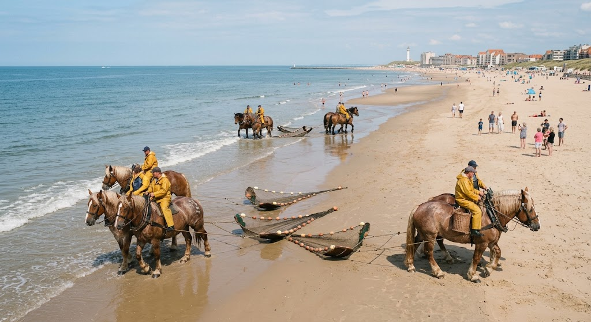
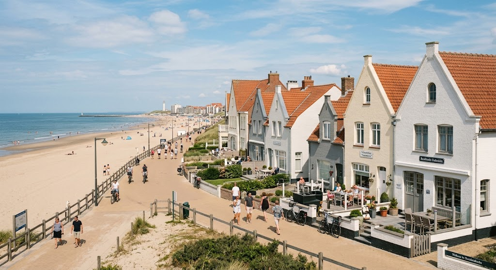

Zien & doen
Oostduinkerke is bekend om zijn brede strand en de paardenvissers. Bezoekers kunnen er de paardenvissers op het strand bewonderen of een frisse duik nemen door te zwemmen in de zee. Daarnaast is het heerlijk om te wandelen in de duinen of lekker actief te zijn met fietsen aan de dijk. Voor een boeiende duik in de geschiedenis is een bezoek aan het Visserijmuseum NAVIGO een echte aanrader. Ervaar al deze geweldige activiteiten snel zelf aan de kust.

Overnachtingen
Oostduinkerke staat bekend om zijn ongerepte charme, uitgestrekte natuur en de gezellige kustsfeer. Het is de perfecte bestemming voor wie wil ontsnappen aan de dagelijkse drukte en op zoek is naar pure ontspanning, gezonde zeelucht en ultiem comfort.
Onze gastenverblijven bieden de ideale basis voor een veelzijdige vakantie of een weekendje weg.
Restaurants
Er is niets fijner dan lekker eten met een prachtig uitzicht op de zee en het strand. Aan de kust vind je heel veel leuke en gezellige restaurants. Je kunt er op een zonnig terras zitten, luisteren naar het geluid van de golven en kijken naar de voorbijgangers.
De menukaarten aan zee staan vol met heerlijke gerechten. Denk aan verse vis die dezelfde dag is gevangen, knapperige garnaalkroketten of een warm pannetje mosselen met frietjes. Ook voor wie liever vlees eet of vegetarisch kiest, is er altijd genoeg keuze.
Of je nu snel iets wilt eten na een lange strandwandeling of uitgebreid wilt tafelen bij zonsondergang, de restaurants aan zee heten je van harte welkom. Neem plaats, ontspan en geniet van een fijne en lekkere maaltijd!